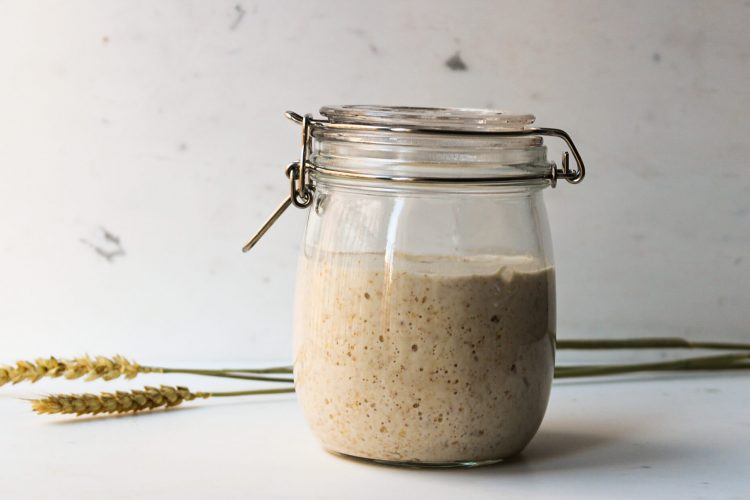

Como elaborar masa madre

¿Que es la masa madre? La masa madre es un fermento natural, que no se le agrega levadura. Está compuesta por harina y agua, y las mismas levaduras que contiene la harina son las que se cultivan y logran el efecto que buscamos para nuestros panificados. Por lo general, se suele creer que la masa madre es un proceso complicado y que mantenerla necesita demasiada atención y tiempo. No es así! Es muy sencillo de hacer, y realmente cambia muchísimo el sabor de lo que cocinemos!
INGREDIENTES
- Agua
- Harina
COMO ELABORAR PASO A PASO
- Dia 1: Pesar 75 gr de harina y 75 g de agua. Mezclar en un recipiente hasta que queden bien integradas. Tiene que quedar una mezcla uniforme, con la textura de la masa de panqueques. Tapar con tapa o un lienzo limpio y mantener a temperatura ambiente (de 22 a 28 grados idealmente) hasta la noche. A la noche agregar 25 gr de harina y 25 gr de agua y volver a mezclar.
- Dia 2: Retirar 50 gr de mezcla. La masa comenzará a tener burbujas y a tener un poco de mal olor, no pasa nada, significa que el cultivo de levaduras está funcionando! Repetir el proceso que se realizó el día anterior. Esto se llama “refrescar la masa” y se hace por la mañana y por la noche.
- Dia 3: Volver a refrescar la masa. En el caso de ser necesario, se puede sacar un poco de la mezcla para que no rebalse el recipiente.
- Dia 4: La masa madre ya está lista para ser usada! Puede pasar que tenga un poco de líquido en la superficie, eso se desecha. Ya se puede utilizar y llevar a la heladera. Se mantiene en heladera, y el día que se vaya a usar se la debe sacar para que se ponga a temperatura ambiente.
Video de ejemplo: